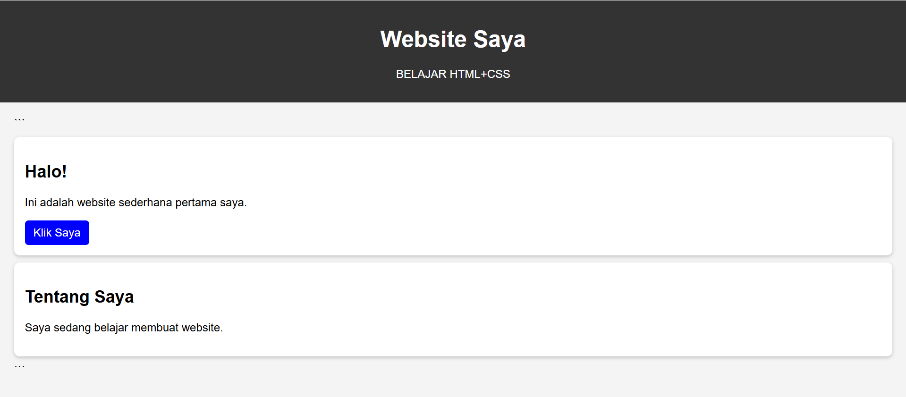

Tersedia untuk proyek pilihan
Halo, Saya irsyad,
programer
Halo, perkenalkan nama saya Irsyad Mifta Khairan. Saya adalah pelajar kelas 10 SMK yang memiliki semangat belajar dan ingin terus mengembangkan kemampuan diri untuk meraih masa depan yang lebih baik.

Karya Terpilih
Artefak Digital
ARSIP / 2021—2024

Project Obsidian
Interaktif
WebGL

Ether Core
Identitas

Techno Fossil
Produk

Monolith UI
Sistem
Mobile
Filosofi
Struktural
Saya percaya pada keabadian desain digital. Pendekatan saya memperlakukan setiap piksel sebagai komponen arsitektur, memastikan skalabilitas, integritas struktural, dan umur panjang estetika.
architecture
Arsitektur Desain
Membangun sistem yang berskala melampaui siklus tren.
code_blocks
Presisi Teknis
Menghubungkan visual kelas atas dengan kode yang siap produksi.
Keahlian Utama
Desain Inti
HTML
CSS
PHYTOON
C++
Teknologi
Tailwind CSS
React / Next.js
Three.js
TypeScript
Node.js
Hubungi Saya
Mari membangun sesuatu yang berkesan.
Saat ini menerima kolaborasi baru dan undangan pembicara untuk Q4 2026.